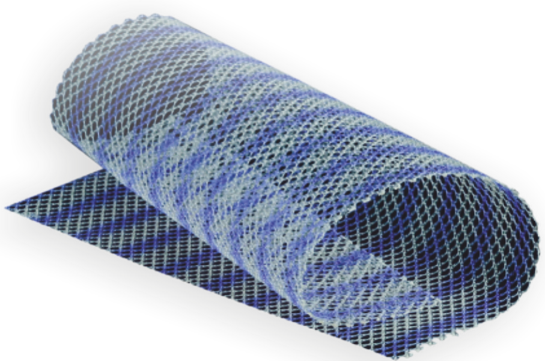

A flat, fibrous sheet of connective tissue that attaches muscles to bones.
Bassini Technique
An open surgical method for inguinal hernia repair by suturing the inguinal ligament to the transversalis fascia.
Biocompatibility
The ability of a material to function within the body without causing adverse effects.
Biological Mesh
Mesh made from natural biological materials, often derived from animal tissue.
Biomaterial
Any material used in medical devices that interacts with biological systems.
Burst Strength
The maximum pressure a mesh can endure before failing or tearing.
Carcinoma
A type of cancer originating in epithelial cells.
Chronic Pain
Persistent pain that continues beyond the expected healing time.
Coated Mesh
Mesh with a protective coating to reduce complications like adhesion.
Collagen
A protein providing structural support to tissues and organs.
Comorbidities
Additional health conditions occurring alongside a primary condition.
Composite Mesh
Mesh made from a combination of materials to enhance performance and compatibility.
CT Scan
Imaging technique using X-rays to create cross-sectional images of the body.
Defect Size
Measurement of the size of the hernia defect or opening.
Direct Hernia
Hernia that protrudes directly through the abdominal wall, not through the inguinal canal.
Dissection
The surgical process of cutting into tissues to access underlying areas.
EHS Classification
A system for categorizing hernias based on type and severity.
Endoscopic Repair
Hernia repair performed using a small camera and instruments through tiny incisions.
Epigastric Hernia
Hernia occurring in the upper central region of the abdomen.
Erosion
The wearing away of tissue or material over time.
eTEP
A laparoscopic hernia repair method
